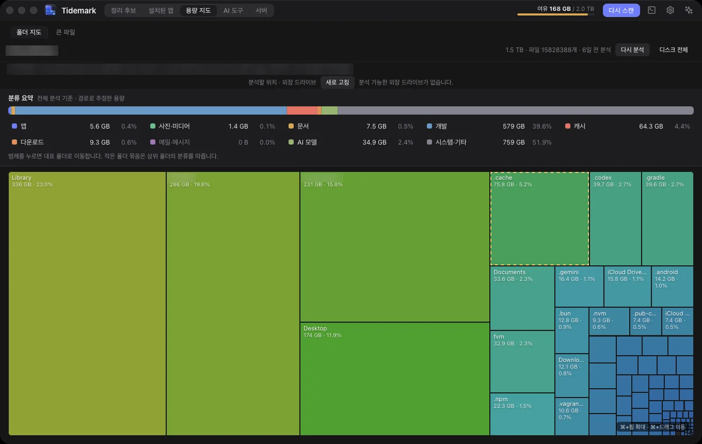
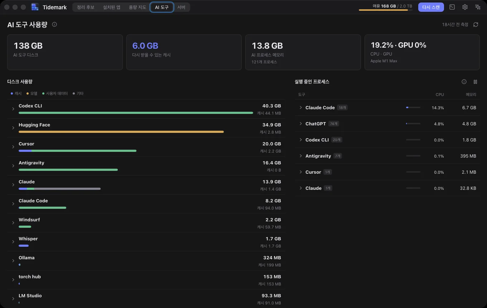
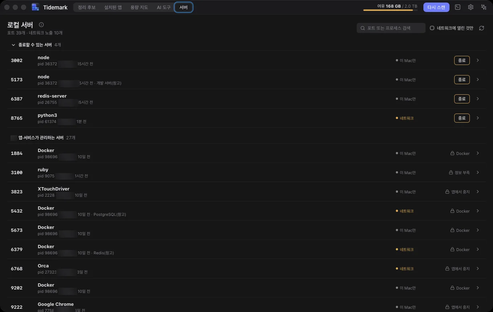

캐시 · 빌드 · 의존성
npm·uv·cargo 캐시와 node_modules, target. 다시 만들 수 있는 데이터부터 찾습니다.
무엇을 찾나
개발 도구가 남긴 데이터부터 오래된 파일까지, 종류별로 모아 보여 줍니다.
npm·uv·cargo 캐시와 node_modules, target. 다시 만들 수 있는 데이터부터 찾습니다.
Xcode 데이터, 사용 불가 iOS 시뮬레이터, Docker 미사용 데이터를 확인합니다.
Hugging Face·Ollama·LM Studio 모델과 AI 도구의 캐시·사용자 데이터를 구분합니다.
오래 안 쓴 앱의 크기와 흔적, 이미 삭제한 앱이 남긴 데이터를 살펴봅니다.
용량 지도에서 큰 폴더를 찾고, 오래되거나 중복된 다운로드를 직접 확인합니다.
Homebrew·npm·pnpm의 새 버전을 확인하고, 공식 명령으로 업그레이드합니다.
화면 둘러보기
안전·주의·위험을 먼저 확인하세요. 복구 방법과 git 상태, 공식 명령의 확보 예상량을 보고 선택할 수 있습니다.
크기에 비례한 지도로 큰 폴더를 따라가세요. 큰 파일과 오래된·중복 다운로드도 여기서 확인합니다.

AI 도구의 디스크·CPU·메모리 사용량을 읽기 전용으로 확인하세요. 캐시와 사용자 데이터를 구분해 보여 줍니다.

프로세스별 열린 포트와 네트워크 노출 상태를 확인하세요. 종료 전에는 대상을 다시 확인하고 확인 창을 거칩니다.

스크린샷은 다크 테마 예시이며 앱은 라이트·다크 테마를 모두 지원합니다.
안전장치
무엇이 지워지는지 보여 주고, 위험한 선택에는 한 번 더 확인을 받습니다.
찾고 크기를 재기만 합니다. 스캔은 아무것도 지우지 않습니다.
되돌릴 수 있도록 휴지통 이동을 기본으로 합니다. 명령 실행·오래된 파일 정리는 즉시 삭제될 수 있습니다.
프로젝트의 커밋 안 된 변경과 푸시하지 않은 커밋을 표시합니다.
관련 프로그램이 실행 중이면 정리 전에 경고합니다.
npm·uv·Docker가 제공하는 정리 방법을 먼저 사용합니다.
지원되는 공식 명령은 전체 크기와 실제 확보 예상량을 구분합니다.
개인 파일은 기본 선택하지 않습니다. 중복 사본 일괄 선택은 원본 후보를 남깁니다.
전체 디스크 접근 여부를 조용히 확인하고, 읽을 수 없는 곳은 건너뜁니다.
AI와 함께
MCP로 지금 보고 있는 항목을 에이전트에게 보여 주세요. 근거와 복구 방법을 검토받고, 정리 여부는 직접 결정합니다.
에이전트는 별도 설치가 필요하며, 로그인·요금은 각 CLI의 설정을 따릅니다.
앱 안의 터미널에서 살펴보거나, CLI로 바로 스캔하세요.
# 스캔만 합니다. 아무것도 지우지 않습니다.
$ tidemark scan스캔 결과와 정리 이력은 이 Mac에만 저장됩니다. 네트워크는 끌 수 있는 업데이트 확인과 직접 실행한 명령·AI 에이전트가 사용합니다.
곧 만나요
첫 공개 버전을 준비하고 있습니다. 서명·공증된 .dmg로 배포됩니다.
GitHub에서 소식 받기시스템 요구 사항: macOS 11 이상 · Apple Silicon / Intel
Homebrew 설치 안내는 공개 릴리스와 함께 제공됩니다. 지금은 소스 저장소에서 아래 명령으로 앱 번들을 만들 수 있습니다.
GitHub에서 소스 공개 소식 →cargo install dioxus-cli --version 0.7.10 --locked
dx bundle --package tidemark-app --releaseTidemark는 무료 오픈 소스입니다. 도움이 되었다면 개발을 응원해 주세요.